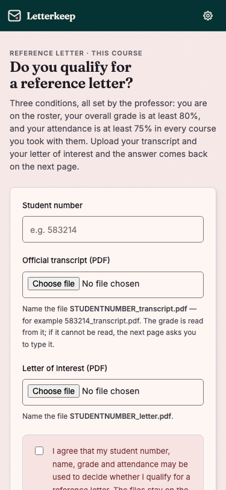
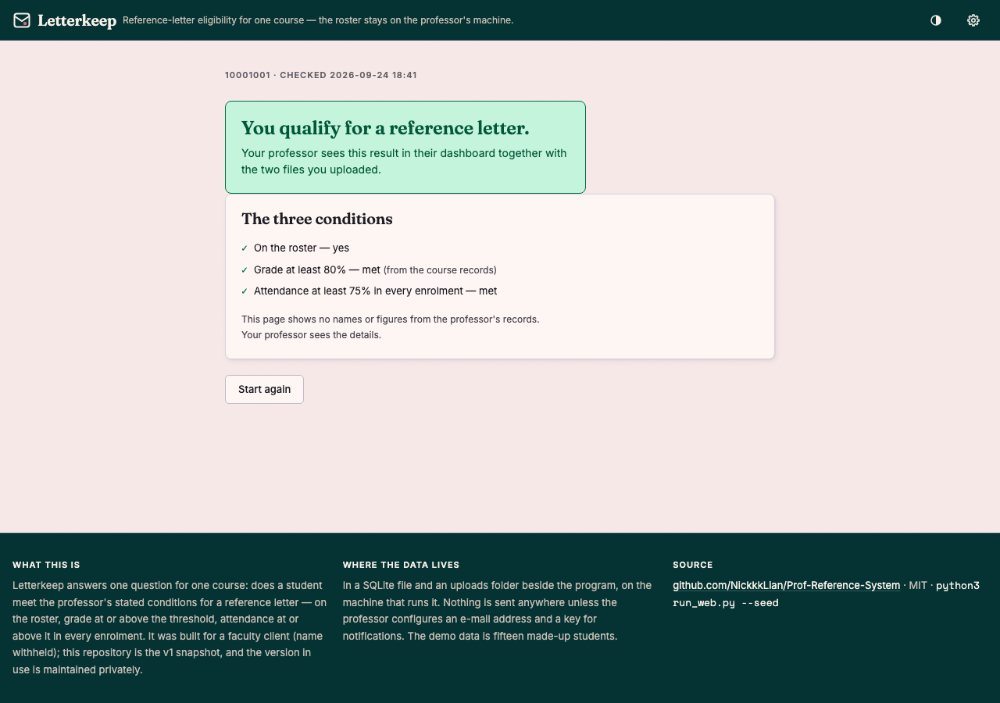
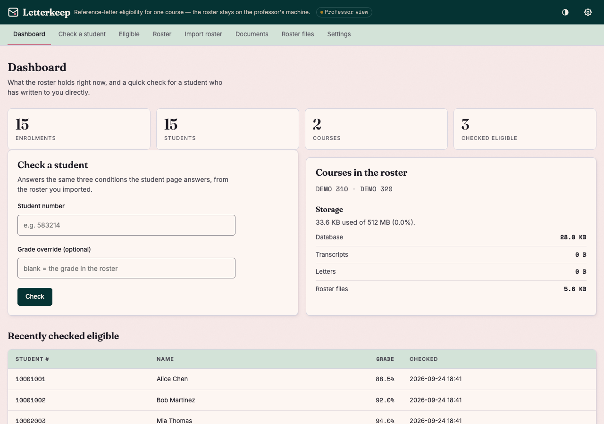
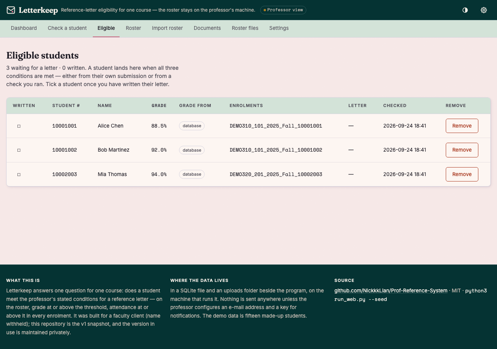

What a student sees
The conditions are stated before the upload form, not discovered afterwards. On a phone, because that is where a student checks this.


What the professor sees


The rule
Forty-five lines, and the part that matters is the third condition: attendance is checked in every enrolment, not on average.
On the roster
The student number appears in a roster file the professor imported. Course, section, year and term come from the import form, so any of the usual column spellings work.
Grade at or above the threshold
Default 80%. Read from the transcript PDF when it can be, typed by the student when it cannot, or overridden by the professor — and which of the three happened is recorded beside the result.
Attendance at or above the threshold, everywhere
Default 75%. A student in two courses with 96% in one and 60% in the other does not qualify. A row with no attendance figure is not a pass.
Run it in a minute
No licence, no account, no network: the demo data is fifteen made-up students in two courses.
git clone https://github.com/NickkkLian/Prof-Reference-System.git
cd Prof-Reference-System
python3 -m pip install -r requirements.txt
python3 run_web.py --seedIt prints the student page and the professor's address — the
same page plus a token, which is the only key to the professor's side. The server binds this machine only
unless --host says otherwise, and listens on 5001, because on macOS 5000 belongs to AirPlay.
Python 3.10 or newer: macOS ships 3.9 as /usr/bin/python3, and the app says so and stops rather
than failing inside an import.
The rule is under test, and the tests have to be able to fail:
python3 -m pytest tests -q # 26 tests
python3 break_check.py # six breaks, each caught by its own test